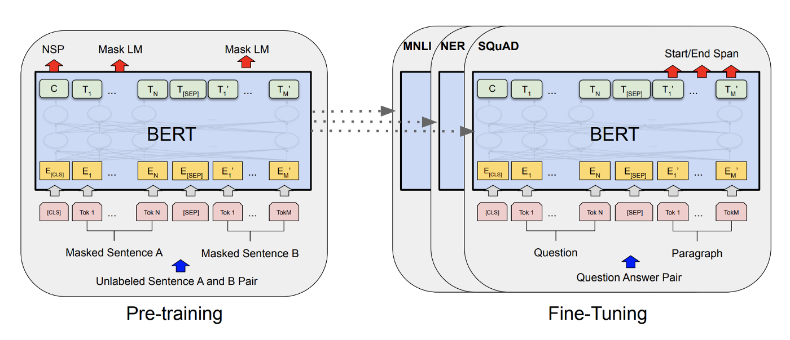
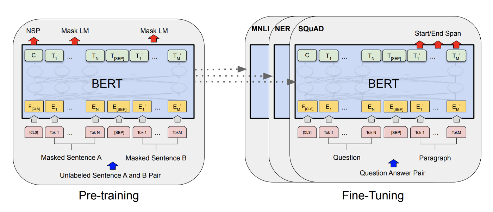
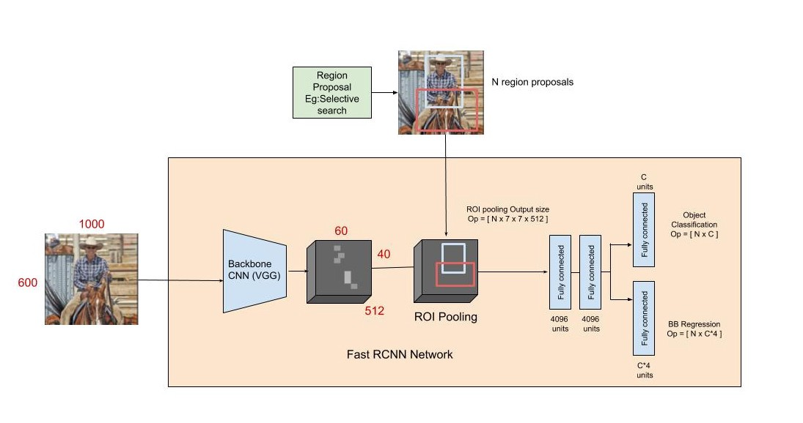
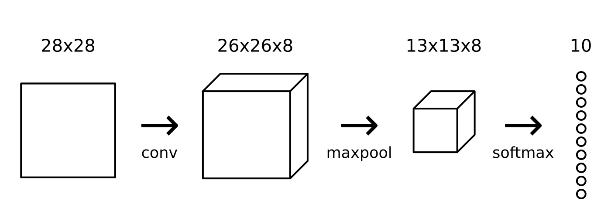

Entity extraction, also known as entity name extraction or Named Entity Recognition (NER), is an information extraction technique
that identifies key elements from text, then classifies them into predefined categories. I implemented a BERT model (a kind of Transformer)
to take in a sentence, tokenize it and classify the tokens among one of the given Part-Of-Speech (POS) tags and Inside-Outside-Beginning (IOB) tags.

Object detection and recognition is applied in many areas of computer vision, including image retrieval, security,
surveillance, automated vehicle systems and machine inspection. The possibilities are endless when it comes to future
use cases for object detection. My team implemented one of the SOTA models in this area to read and pre-process an image,
look for objects, and draw a bounding box around the object.

CNNs form the roots of Computer vision and it's applications in object detection, image recognition, etc.,.
In order to build well-defined SOTA models, one needs an end-to-end understanding of CNNs. I had fun in building a CNN from scratch using
just Python and Numpy (inspired by professor Dr. Muhammad Aminul Islam and Dr. Andrej Karpathy)
as this helped in understanding the "under-the-hood" mechanism of a CNN.
This has given me the confidence to build any kind of model using Neural Networks.